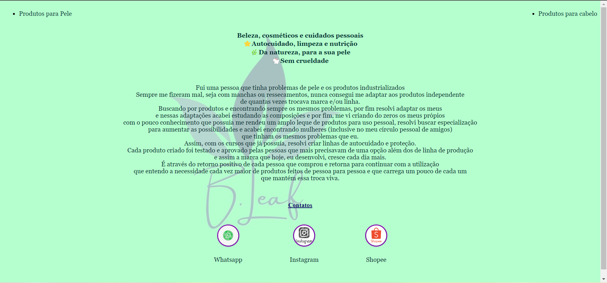
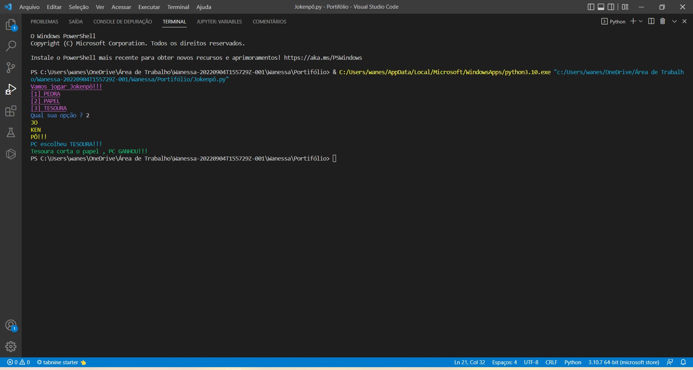
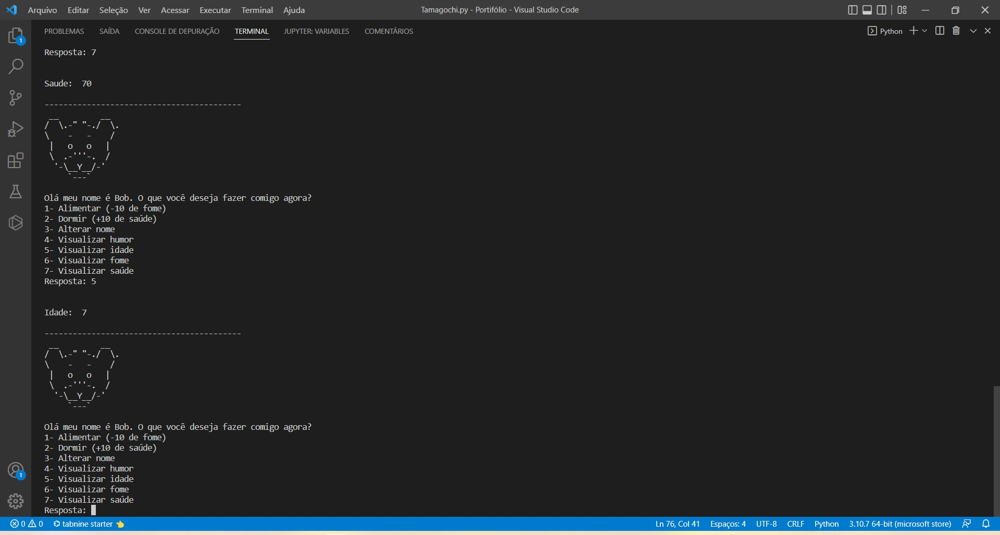
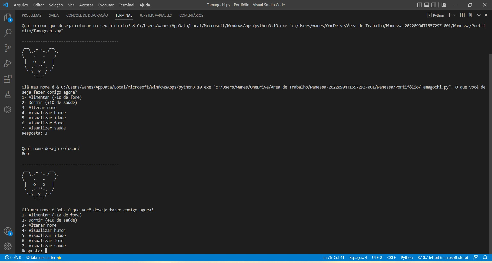

Projetos
Alguns projetos feitos em testes para treinar o conhecimento, alguns exercícios
realizados para aplicar o que foi aprendido.
* Portifólio de produtos para loja
 Site em estilo portifólio feito para a loja B.Leaf
--------------------------------------------------------------------------------
* Jokenpô
Código em Python do jogo Jokenpô, jogo do pedra/ papel e tesoura, em que você desafia o computador.
Trabalho de introdução a sintaxe do Python.
----------------------------------------------------------------------------------------------
* Tamagochi
 Código do Tamagochi, jogo que estava em alta nos anos 90. Se consegue dar nome, analizar humor, saúde e
outras caracteristicas do bichinho virtual.
----------------------------------------------------------------------------------------------
* Jogo Mario
Jogo desenvolvido para meus filhos, aplicação do que foi mostrado em aula.